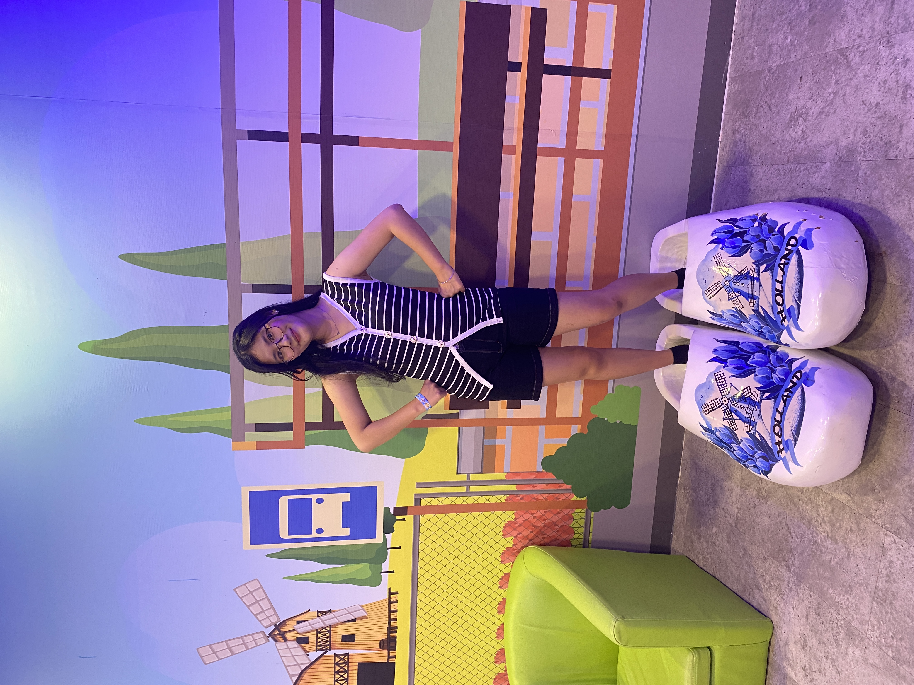

👑 Tuti Kilaswari 👑
Happy 22nd Birthday My Princess
Coba Pencet Sayanggg ✨
📸🤍 You look absolutely beautiful in this photo🤍📸

⬅️
➡️
Ada Suratnya lohhh 💌
💌 Untuk Tuti
Lanjut ✨
🎁 Pilih Hadiah Spesialmu
Ada kejutan di salah satu kado ini!
🎁
🎁
🎁
⏳ Countdown
Hari kita ngerayain ulang tahunmu kali ini:
Lanjut ❤️
Tuti Kilaswari ❤️
kamu mau ngga ngerayain pada tanggal 5 Juni pukul 19.00 WIB?
❤️ Mau
💖 Mau Banget